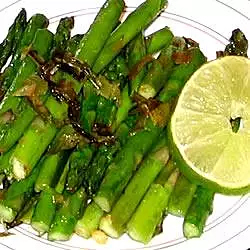

Garlic Asparagus with Lime

A delicious fresh tasting asparagus dish
This is a nice, light asparagus dish which is easy to make. It will probably
take you only about 15 minutes, and will act as a nice appetizer or side dish.
This recipe will make four servings worth. Most of the work is just prepping the ingredients!
It will not be hard to make this at the same time as another dish.
Ingredients
- 1 teaspoon butter
- 1 tablespoon olive oil
- 1 clove of garlic, minced
- 1 medium shallot, minced
- 1 bunch fresh asparagus spears, trimmed
- 1/4 of a lime cut in wedges
- salt and pepper to taste
Steps
- Melt butter with olive oil in a large skillet over medium heat.
Stir in garlic and shallots, and cook for 1 to 2 minutes.
-
Stir in asparagus spears; cook until tender, about 5 minutes.
Squeeze lime over hot asparagus, and season with salt and pepper.
-
Transfer to serving plate, and garnish with lime wedges. Enjoy!